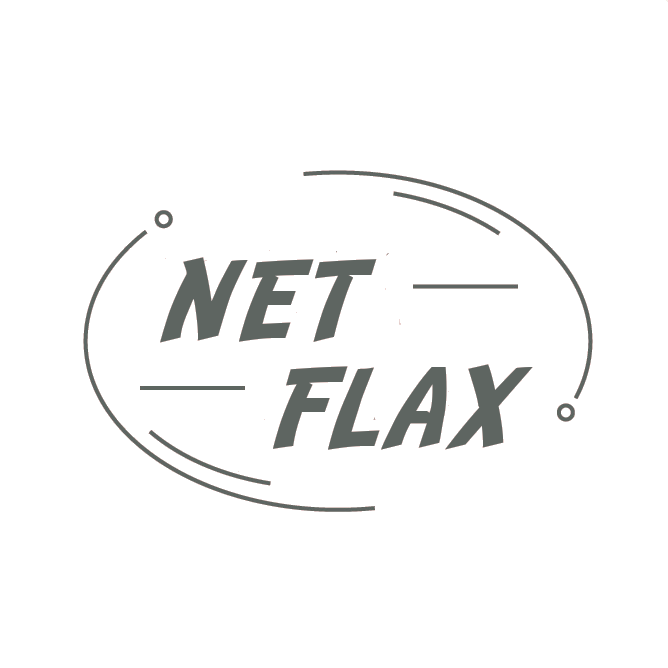

Filmes
Trailers
Trilha Sonora
Contato
Sobre
Bird Box
Diretor:
Susanne Bier
Com:
Sandra Bullock, Trevante Rhodes, Jacki Weaver, Rosa Salazar, Danielle Macdonald, Lil Rel Howery, Tom Hollander, BD Wong, Sarah Paulson, John Malkovich, Colson Baker
Gênero:
Suspense
Censura:
12 anos
Tempo de Duração:
2h4min
Sinopse:
Em Caixa de Pássaros, Malorie (Sandra Bullock) e seus filhos estão em um mundo pós-apocalíptico e precisam chegar em um refúgio para escapar do Problema, criaturas que ao serem vistas fazem pessoas se tornarem extremamente violentas. De olhos vendados para não serem afetados, a família segue o curso de um rio para chegar à segurança.